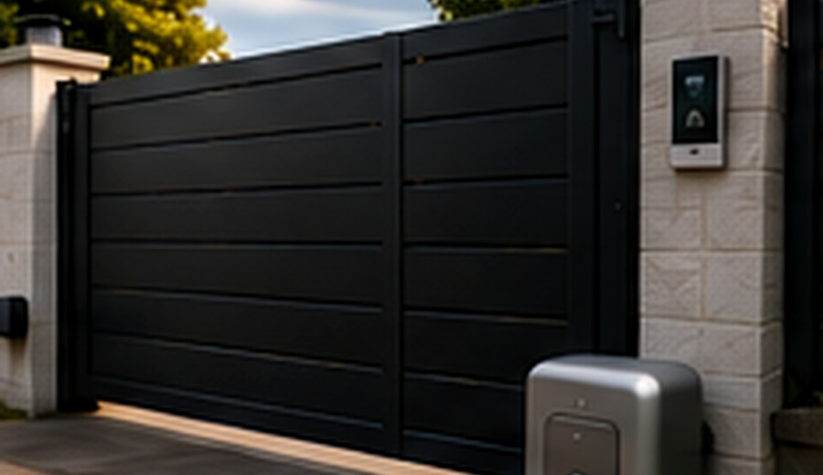
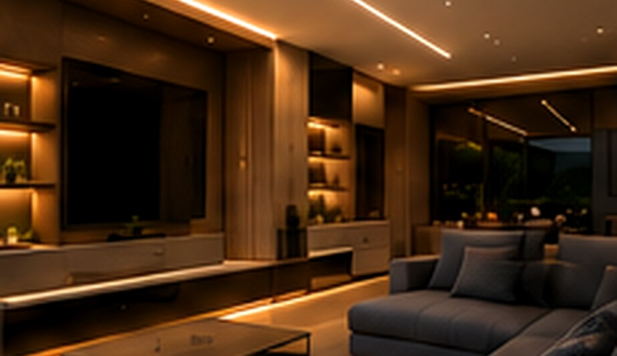

Expertise
Des installations conformes et durables.
Installation, dépannage et automatisation pour les particuliers et les professionnels en Finistère Sud.
Basé à Pont-Aven, j’interviens dans tout le Finistère Sud pour vous accompagner dans vos projets électriques et d’automatisation avec sérieux et proximité.
En savoir plus sur ARMOR →Des installations conformes et durables.

Des équipements fiables et performants.

Des solutions pour simplifier votre quotidien.

Un artisan local, réactif et à l’écoute.